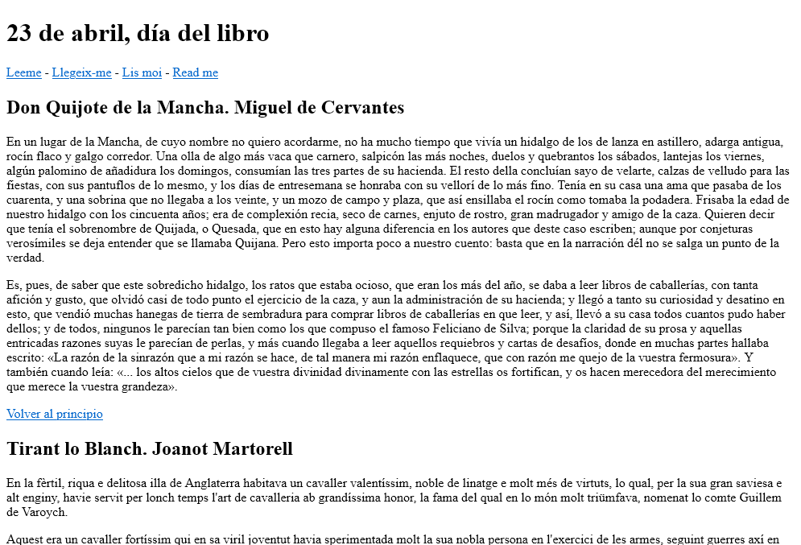
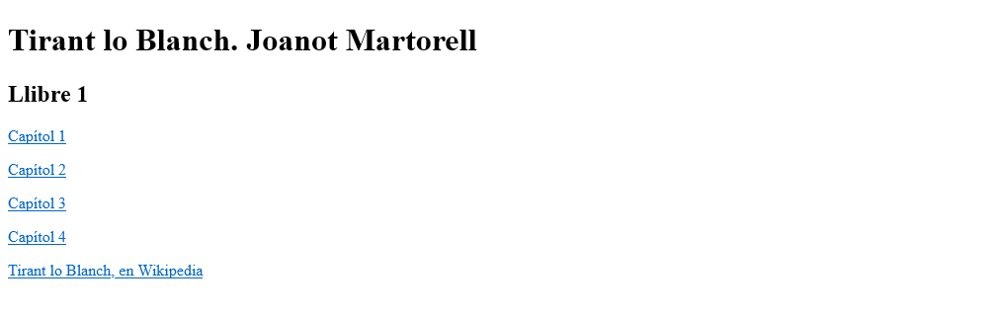
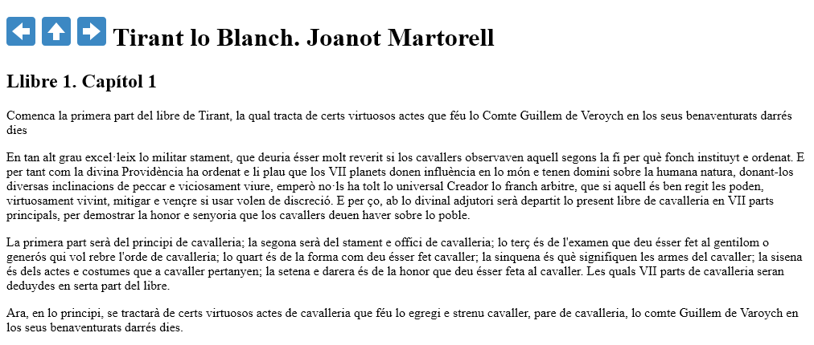
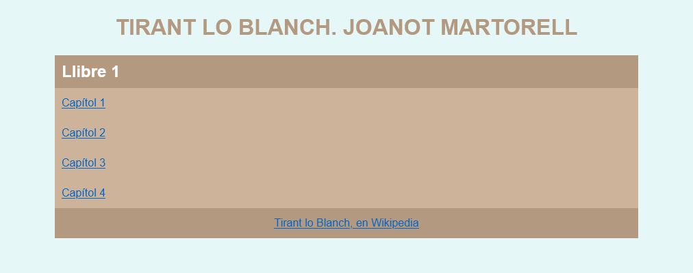
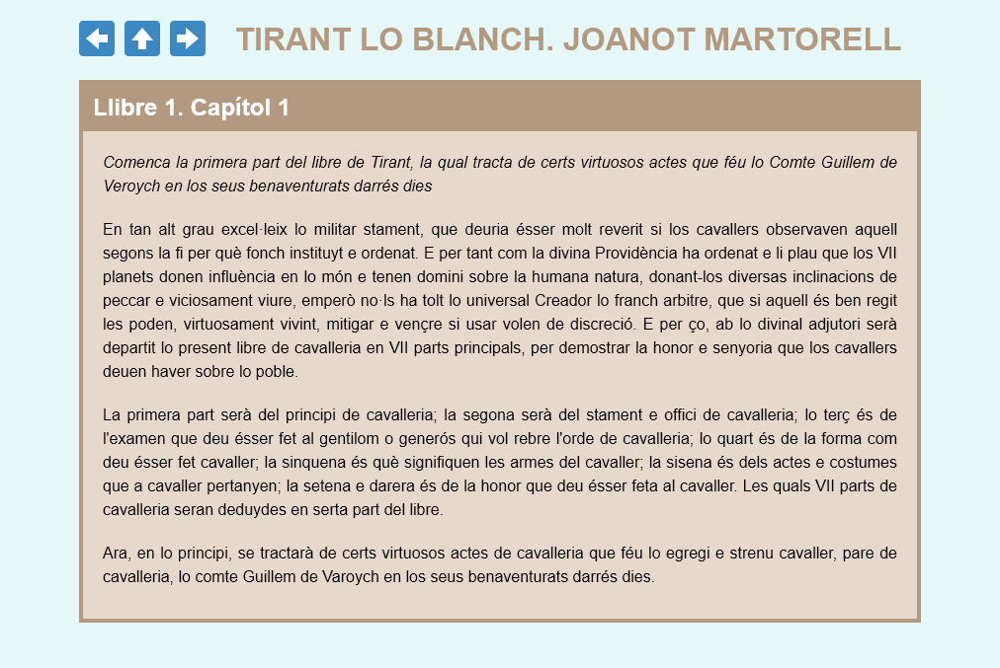
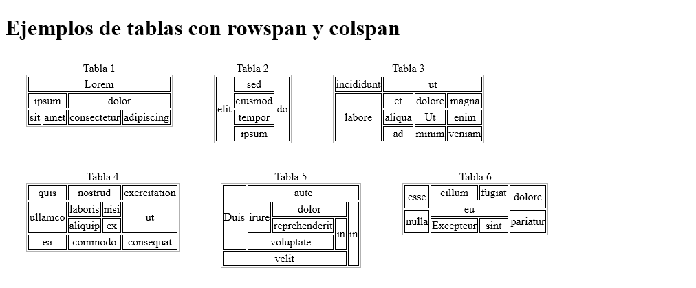
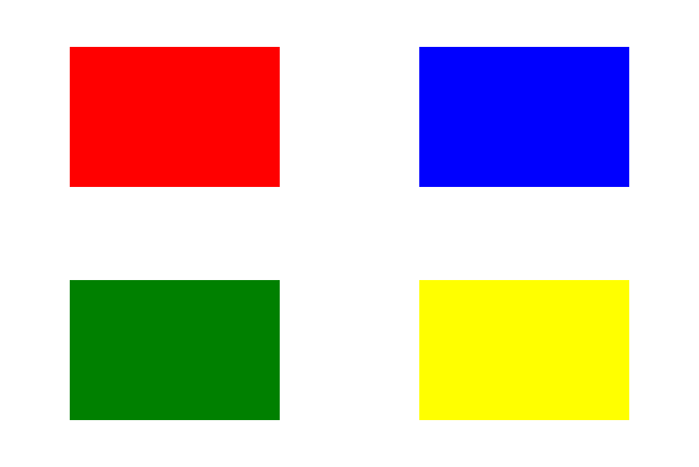
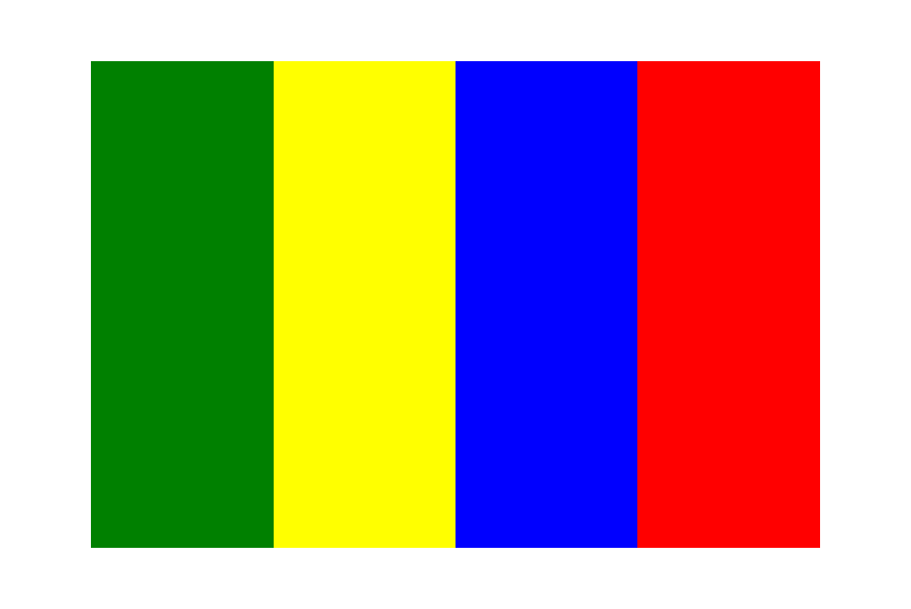

Estos ejercicios tratan sobre los temas tratados en la Semana 5 del curso.
Para facilitar la realización de los ejercicios, se proporcionan unas plantillas de los ejercicios S5. Una vez descargado el fichero zip:
Descomprima las plantillas en la carpeta ejercicios. Se creará una carpeta s5-plantillas.
Renombre la carpeta s5-plantillas como s5.
Las capturas de pantalla están tomadas con un ancho de ventana de 1024px aproximadamente.
⚠️ En algunos aspectos, no es necesario que el resultado sea absolutamente exacto, sobre todo porque algunos detalles no tienen importancia. Por ejemplo, basta con que la ventana del navegador sea un poco más ancha o estrecha para que las palabras salten de una línea a la siguiente. Los valores de tamaños y distancias utilizados suelen ser valores "redondos", pero acertar el valor exacto puede necesitar varios intentos. Con que el parecido sea razonable, es suficiente. Otros aspectos sí que me gustaría que fueran idénticos, por ejemplo los tipos de letra, la posición de las imágenes o qué palabras se han resaltado.
Formatee con Visual Studio Code tanto la página web como la hoja de estilo (con CSScomb).
S5 1 A - Enlaces internos
Abra en Visual Studio Code la página enlaces.html.
Añada las etiquetas necesarias a partir de la captura siguiente:
Complete las etiquetas de bloques.
Incluya cada fragmento de obra en una etiqueta div, article o section
Cree los destinos asignando un atributo id a cada una de las etiquetas creadas.
Cree los enlaces a esos elementos.
Vista sin estilo (el resto de fragmento no visibles en la captura deben tener el mismo aspecto que el primero):

Cree la hoja de estilo enlaces.css y añada el enlace a la hoja de estilo.
[OPTATIVO] Añada los atributos en las páginas web y las reglas en la hoja de estilo de manera que al abrir la página web en un navegador el contenido se vea como en una de las capturas con estilo siguientes, a su elección. Haga clic en la captura para ver la captura de la página completa
Nota: Colores empleados (formato hwb):
hwb(200 1% 70%),
hwb(45 1% 0%),
hwb(30 0% 2%) y
white
Nota: Colores empleados (formato hsl):
hsl(200 94% 16%),
hsl(45 100% 50%),
hsl(30 100% 49%) y
white
S5 1 B - Enlaces externos
No modifique la estructura de carpetas del ejercicio. Mantenga cada fichero en la carpeta original.
Abra en Visual Studio Code las páginas index.html, tirant-lo-blanch/llibre-1-capitol-1.html, etc.
Añada las etiquetas necesarias a partir de las capturas siguientes, teniendo en cuenta que:
Los enlaces de la portada "Capitol 1", etc. enlazan a las páginas correspondientes del directorio tirant-lo-blanch
El enlace de la portada "Tirant lo Blanch, en Wikipedia" enlaza a la página correspondiente al autor en la Wikipedia.
Las imágenes de flechas de las páginas de capítulos enlazan respectivamente a los capítulos anterior, a la portada y al capítulo posterior. El primer y último capítulo enlazarán dos veces a la portada.
Vista sin estilo:


Cree la hoja de estilo enlaces.css (en el directorio raíz del ejercicio, donde se encuentra index.html) y añada el enlace a la hoja de estilo en todas las páginas web.
[OPTATIVO] Añada las etiquetas y atributos en las páginas web y las reglas en la hoja de estilo de manera que al abrir la página web en un navegador el contenido se vea como las capturas con estilo siguientes.
Vista con estilo:


Nota: Colores empleados (formato hwb):
hwb(180 90% 3%),
hwb(30 50% 30%),
hwb(30 60% 20%),
hwb(30 80% 10%) y
white
Nota: Colores empleados (formato hsl):
hsl(180 54% 94%),
hsl(30 25% 60%),
hsl(30 33% 70%),
hsl(30 33% 85%) y
white
S5 2 - Tablas
En este ejercicio se trata de crear 6 tablas con atributos rowspan y colspan[las dos últimas son opcionales].
Abra en Visual Studio Code la página tablas.html.
Sólo hay que escribir el código html, la hoja de estilo va incluida en la plantilla.
El resultado debe ser el siguiente:

S5 3 - Posicionamiento absoluto
En este ejercicio se trata de posicionar cuatro divisiones (sin contenido) con posicionamiento absoluto (position: absolute).
Abra en Visual Studio Code la página posicionamiento-absoluto-1.html.
Complete la hoja de estilo (que ya contiene una de las divisiones resueltas, como ejemplo).
El resultado debe ser el siguiente:

Nota: Colores empleados:
red,
blue,
yellow y
green
Abra en Visual Studio Code la página posicionamiento-absoluto-2.html.
Complete la hoja de estilo.
El resultado debe ser el siguiente:

Nota: Colores empleados:
red,
blue,
yellow y
green
{kind=link}
{kind=link}